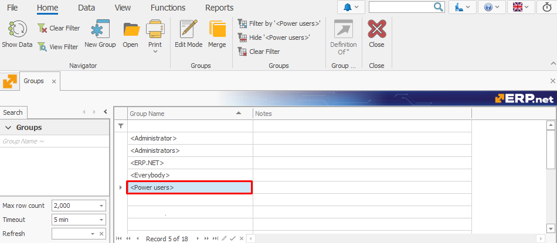

Power Users
Power Users is a system-defined group type providing select users with privileges elevated above those of the Normal user-definable group type but below the Administrators type.
Its primary purpose is to allow users to access permissions via the Security (Desktop Client) and Access Permissions (Web Client) panel, as well as have the option to make this panel visible or hidden for regular users.
Access to the panel is further defined through the Manage Access Permissions key, which is assigned to the Power Users group.

System Data
- GroupType Value:
P - Description: PowerUsers
- Database Value:
P - Model Value: 4
Key features
The Power Users group:
Grants access to the Security (Access Permissions) panel and allows Power Users to make it accessible/hidden for regular users.
Has users always manually added. Unlike in the Administrators group type, there is no checkbox or automated assignment process.
Cannot be edited directly by users. This includes changing its name and header.
Any attempt by users to modify it will result in an error, ensured by business rule R37166.